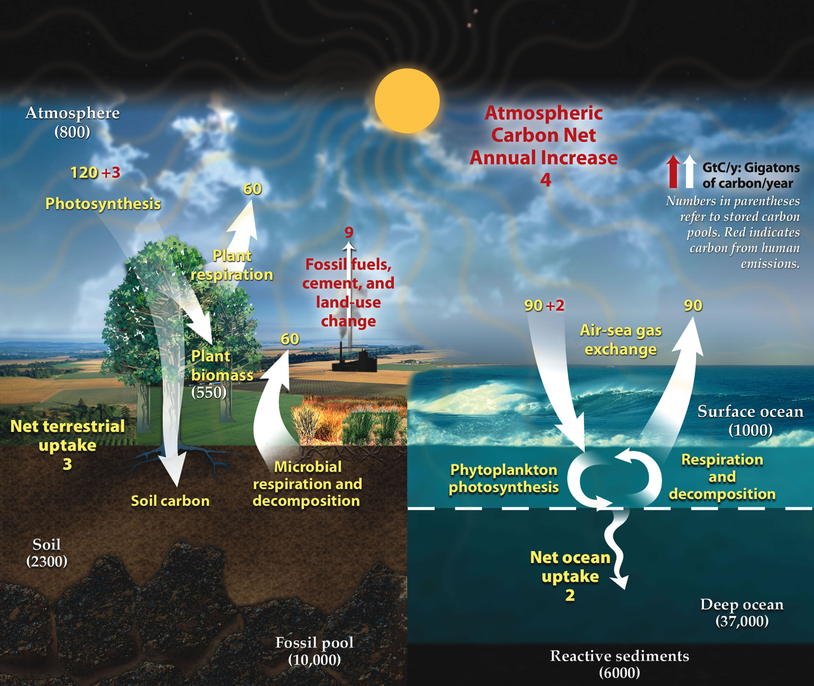

Global #ClimateStrike, Sept 20th 2019
Assembly @ Ashmount Primary School
Hello!
I'm Ben's dad (3G), my name is Thomas.
- hit space to go through this presentation -
Why are we all here today?
Let's start with a quick history of our planet.
We need to go back to 70 million years ago, long before humans inhabited this planet
Back then, in an period called Cretaceous...
dinosaurs still roamed the world
climate was much warmer and humid
oceans were higher and ice caps didn't exist
One of the reasons for warm climate during the Cretaceous period was the high level of greenhouse gases (GHG)
A GHG absorbs energy from the sun and emits it back into the atmosphere
The primary GHGs in Earth's atmosphere are water vapor, carbon dioxide and methane
GHGs absorb energy both from the sun and reflected from the Earth's surface, keeping it within the atmosphere
Image courtesy: A loose necktie - Own work, CC BY-SA 4.0, Link
For millions of years, trees have sucked carbon dioxide from the atmosphere
storing carbon in wood while growing, and releasing oxygen in the air
then dying and going underground to transform, becoming coal and oil
Photo by Sebastian Unrau on Unsplash
Fast forward 70 million years, from the last Triceratops and T-Rex
to 1750!
Our planet had substantially cooled off from the Cretaceous period
And something beautiful was about to happen...
The industrial revolution
Europe and the United States went from hand production methods to machines
We started using machines powered by steam
We invented new processes to produce iron
During the following 250 years, until now
We've become richer, healthier and longer living
The population has increased from ~1Bn to ~8Bn and moved to the cities
We need bigger buildings, more food, more cars, more Playstations! ü§© üè¢ üå≠ üöó üéÆ
All of this comes at a price...
We need more energy, a lot of it
So we use what we have readily available:
coal, gas and oil, AKA fossil fuels
So, here's the problem
We are taking carbon from undergound, where it has been stored for millions of years
We burn carbon with oxygen, releasing carbon dioxide to the atmosphere
All these GHGs are warming the planet again, bringing back the clock to the dinosaurs period
This is a big problem: ocean will rise, ice caps will melt, deserts will expand, but there are now ~8B human beings on Earth
How do we stop it?
we need to stop burning fossil fuels, and start capturing greenhouse gases from air
and we need to do it pretty fast: we have about 15 years to change trends and stay within reasonable climate change parameters
OK, so... where do we start?
Answer: everywhere! reasons for climate change are evenly spread across all sectors:
- Electricity: 25%
- Agriculture: 24%
- Manufaturing: 21%
- Transportation: 14%
- Buidings: 6%
The good news is that there are actions we can all take to reduce our impact
Transportation
Use public transport, walk, reduce use of private vehicles to a minimum
we are producing more electric cars, but we will need 10x more energy, where is it going to come from?
Buildings and heat
improve insulation, use better materials, get rid of natural gas for heating systems
"electrification of heat" is happening, but we will need 10x more energy
Electricity is key
We need to use alternatives to fossil fuels: wind, solar, nuclear, hydro, tidal
and we need to find new efficient ways to store this energy
Manufaturing
Reduce use of single use plastics to a minimum
start thinking of any object you buy: pasta, toothpaste, shampoo, toys
Agriculture
Try to eat mainly plants, eat less meat, try to avoid beef and dairy

I'm sorry, we messed this up. I did.
Your parents and grandparents did.
And now we need your help to fix this mess.
So back to my initial question:
Why are we all here today?
We are here because we want our voices heard
We want all governments on earth to do something for climate change NOW
And we need your voices to be heard among everybody else's
We are here because we raise our voices with a #ClimateStrike
You know, I am a big fan of Marvel movies
and one of my favourite super heroes is Black Panther
I see him, and the place where he lives, and it gives me hope
I have this image in my mind of a beautiful city in the future that lives in harmony with nature
Let's build a bright future together
Let's build Wakanda.
References
for the full list, please visit the notes page
below here some extracts with images
Humanity’s fossil-fuel use, if unabated, risks taking us, by the middle of the twenty-first century, to values of CO2 not seen since the early Eocene (50 million years ago)
Source: Nature
Human activities since the beginning of the Industrial Revolution (around 1750) have produced a 45% increase in the atmospheric concentration of carbon dioxide (CO 2), from 280 ppm in 1750 to 415 ppm in 2019. [...]
The vast majority of anthropogenic carbon dioxide emissions come from combustion of fossil fuels, principally coal, oil, and natural gas.
Source: Wikipiedia
By burning coal, oil, and natural gas, we accelerate the process, releasing vast amounts of carbon (carbon that took millions of years to accumulate) into the atmosphere every year.
Source: NASA's Earth observatory
Ethical considerations, and the principle of equity in particular, are central to this report, recognizing that many of the impacts of warming up to and beyond 1.5°C, and some potential impacts of mitigation actions required to limit warming to 1.5°C, fall disproportionately on the poor and vulnerable (high confidence)
Source: IPCC special report
To prevent the worst effects of climate change, we need to get to zero net greenhouse gas emissions in every sector of the economy within 50 years—and as the IPCC recently found, we need to be on a path to doing it in the next 10 years.
Source: Gates Notes